このページで比べるもの これはframe-color P/F候補の5録音・30対応の観察です。別途進行している120録音のRAW_FULL評価結果とは混ぜていません。
Pは今回の条件で新しく生成した正式PML。FはM1分割、frame SPEC選択、FFT、complex64のcast・加算を合わせた方式全体です。F−PをSPEC選択だけの効果とは解釈できません。
波形差・SPEC実値差の露出は記述量です。大きさは品質点数や採否ではありません。原音は未編集の同じ録音で、±3半音の正解音声ではありません。
同じseedはGaussian入力の管理条件です。出力波形や聴感の同等性を保証するものではありません。
この保存結果で見えたこと 全30対応でFとPの波形は異なります。全長F−PのRMSは0.000119607～0.00275156 FS、PのRMSに対する比は0.00376833～0.0785244（約0.38～7.85%）。方式全体の差で、改善量ではありません。
SPEC実値が変わる断片の注入は、全注入を分母にすると1.10～7.46%。そのkernel窓の潜在支持域は波形長の12.25～42.37%です。注入の露出と支持域の広さを、知覚上の効果の大きさや時間とは読み替えません。
sample3の+3半音では、両seedとも全長の最大差が既存の参考枠2.08～2.13秒内にあります。同軸図ではP/Fの両方に2.09～2.10秒付近の高域成分が見え、Fで先行構造が丸ごと消えたとは読めません。これは窓中心の前後10 msを含む表示の読取りで、音素境界・品質の判定ではありません。
各録音の詳細に全条件を残しています。sample3の「他の音高・seed」では+3両seedを含む6条件の2.0～2.2秒拡大を見られます。原音は未編集の参考で、編集音高の正解ではありません。
周波数表示 通常 mel
外観 端末に合わせる ライト ダーク
SAMPLE 1 · 6.000 s
1089-134686-0008 native / 0半音 / seed 0
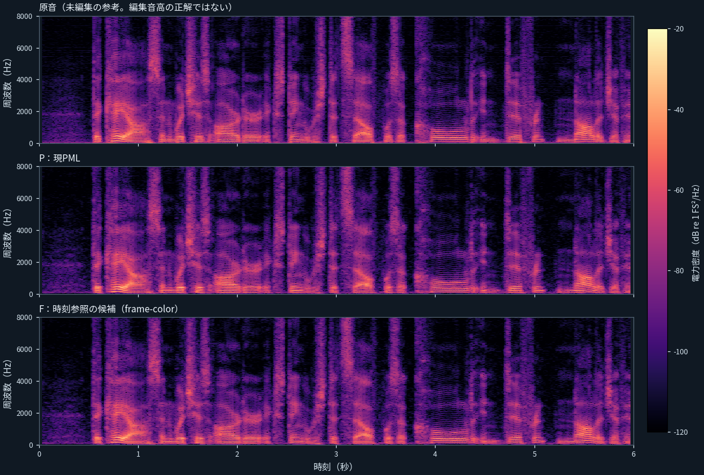
原音/P/Fの全長波形を共通の時刻軸と色範囲で表示。試聴WAVは先頭最大5秒。音量正規化なし。 全長の波形を同じ振幅軸で見る 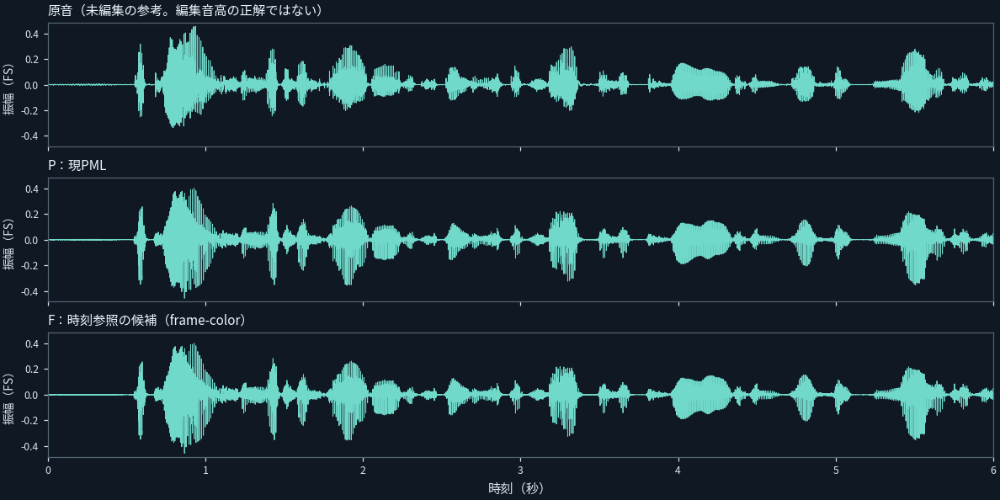
保存された波形差・SPEC露出を見る
F−P RMS / FS 0.000707927
(F−P RMS) / (P RMS) 0.0153631
F−P 最大絶対差 / FS 0.0178264
注入重み付き log-SPEC差 RMS / neper 0.268704
log-SPEC差 最大絶対値 / neper 3.38349 注入は重なる出力位置でも別に数えます。潜在支持域はkernel窓の和集合であり、実際の効果時間ではありません。nullを0に補完していません。
既存比較対象：HNM（旧保存音声・nativeのみ） 旧レポートに掲載済みのHNM音声をSHA・長さ照合後にそのまま再利用。今回の再生成・再測定ではなく、編集音高の正解ではありません。
他の音高・seedを見る（5対応）
+0半音 · seed 20261015
原音/P/Fの全長波形を共通の時刻軸と色範囲で表示。試聴WAVは先頭最大5秒。音量正規化なし。 保存された波形差・SPEC露出を見る
F−P RMS / FS 0.000609028
(F−P RMS) / (P RMS) 0.0132125
F−P 最大絶対差 / FS 0.0219037
注入重み付き log-SPEC差 RMS / neper 0.268704
log-SPEC差 最大絶対値 / neper 3.38349 注入は重なる出力位置でも別に数えます。潜在支持域はkernel窓の和集合であり、実際の効果時間ではありません。nullを0に補完していません。
-3半音 · seed 0
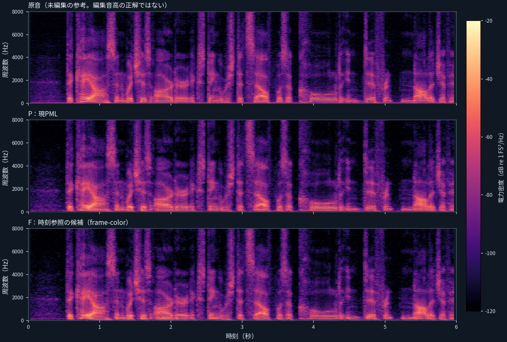
原音/P/Fの全長波形を共通の時刻軸と色範囲で表示。試聴WAVは先頭最大5秒。音量正規化なし。 保存された波形差・SPEC露出を見る
F−P RMS / FS 0.00076172
(F−P RMS) / (P RMS) 0.0172306
F−P 最大絶対差 / FS 0.0297532
注入重み付き log-SPEC差 RMS / neper 0.263979
log-SPEC差 最大絶対値 / neper 4.12136 注入は重なる出力位置でも別に数えます。潜在支持域はkernel窓の和集合であり、実際の効果時間ではありません。nullを0に補完していません。
-3半音 · seed 20261015
原音/P/Fの全長波形を共通の時刻軸と色範囲で表示。試聴WAVは先頭最大5秒。音量正規化なし。 保存された波形差・SPEC露出を見る
F−P RMS / FS 0.000731702
(F−P RMS) / (P RMS) 0.0165623
F−P 最大絶対差 / FS 0.0261719
注入重み付き log-SPEC差 RMS / neper 0.263979
log-SPEC差 最大絶対値 / neper 4.12136 注入は重なる出力位置でも別に数えます。潜在支持域はkernel窓の和集合であり、実際の効果時間ではありません。nullを0に補完していません。
+3半音 · seed 0
原音/P/Fの全長波形を共通の時刻軸と色範囲で表示。試聴WAVは先頭最大5秒。音量正規化なし。 保存された波形差・SPEC露出を見る
F−P RMS / FS 0.00103071
(F−P RMS) / (P RMS) 0.0244824
F−P 最大絶対差 / FS 0.029459
注入重み付き log-SPEC差 RMS / neper 0.247986
log-SPEC差 最大絶対値 / neper 4.39682 注入は重なる出力位置でも別に数えます。潜在支持域はkernel窓の和集合であり、実際の効果時間ではありません。nullを0に補完していません。
+3半音 · seed 20261015
原音/P/Fの全長波形を共通の時刻軸と色範囲で表示。試聴WAVは先頭最大5秒。音量正規化なし。 保存された波形差・SPEC露出を見る
F−P RMS / FS 0.00115175
(F−P RMS) / (P RMS) 0.0273681
F−P 最大絶対差 / FS 0.0481102
注入重み付き log-SPEC差 RMS / neper 0.247986
log-SPEC差 最大絶対値 / neper 4.39682 注入は重なる出力位置でも別に数えます。潜在支持域はkernel窓の和集合であり、実際の効果時間ではありません。nullを0に補完していません。
SAMPLE 2 · 6.000 s
1188-133604-0003 native / 0半音 / seed 0
原音/P/Fの全長波形を共通の時刻軸と色範囲で表示。試聴WAVは先頭最大5秒。音量正規化なし。 全長の波形を同じ振幅軸で見る 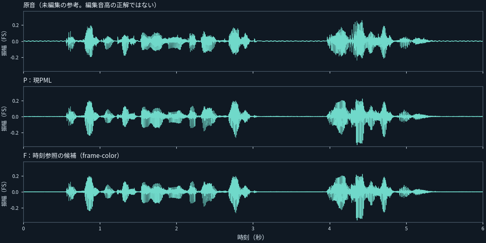
保存された波形差・SPEC露出を見る
F−P RMS / FS 0.000119607
(F−P RMS) / (P RMS) 0.00376833
F−P 最大絶対差 / FS 0.00397409
注入重み付き log-SPEC差 RMS / neper 0.178235
log-SPEC差 最大絶対値 / neper 1.60736 注入は重なる出力位置でも別に数えます。潜在支持域はkernel窓の和集合であり、実際の効果時間ではありません。nullを0に補完していません。
既存比較対象：HNM（旧保存音声・nativeのみ） 旧レポートに掲載済みのHNM音声をSHA・長さ照合後にそのまま再利用。今回の再生成・再測定ではなく、編集音高の正解ではありません。
他の音高・seedを見る（5対応）
+0半音 · seed 20261015
原音/P/Fの全長波形を共通の時刻軸と色範囲で表示。試聴WAVは先頭最大5秒。音量正規化なし。 保存された波形差・SPEC露出を見る
F−P RMS / FS 0.000155309
(F−P RMS) / (P RMS) 0.00486516
F−P 最大絶対差 / FS 0.00453569
注入重み付き log-SPEC差 RMS / neper 0.178235
log-SPEC差 最大絶対値 / neper 1.60736 注入は重なる出力位置でも別に数えます。潜在支持域はkernel窓の和集合であり、実際の効果時間ではありません。nullを0に補完していません。
-3半音 · seed 0
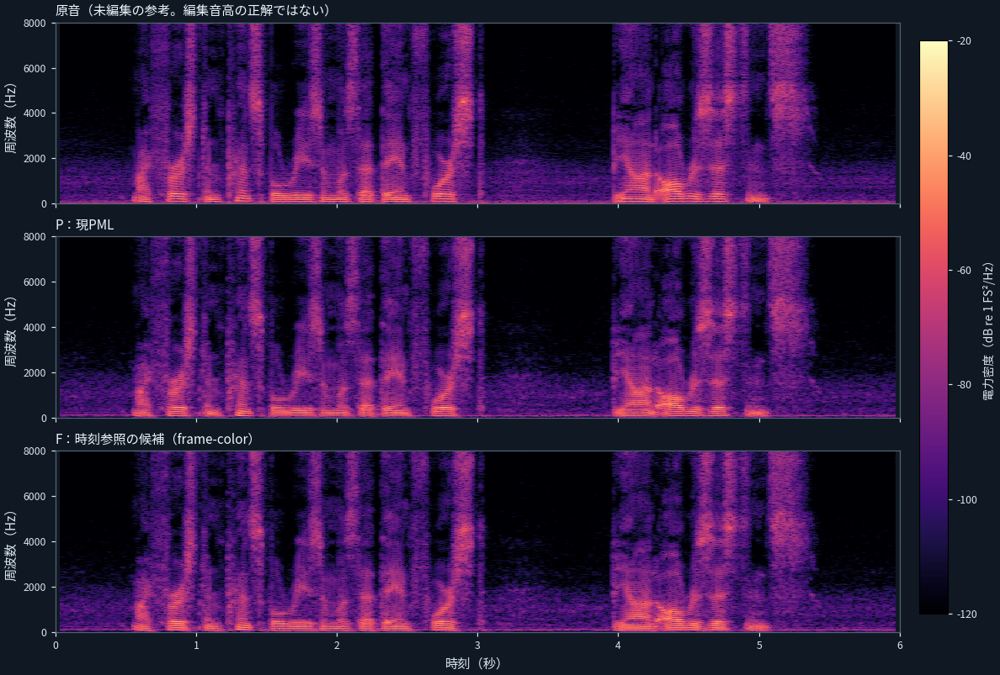
原音/P/Fの全長波形を共通の時刻軸と色範囲で表示。試聴WAVは先頭最大5秒。音量正規化なし。 保存された波形差・SPEC露出を見る
F−P RMS / FS 0.000189165
(F−P RMS) / (P RMS) 0.00611101
F−P 最大絶対差 / FS 0.00942885
注入重み付き log-SPEC差 RMS / neper 0.206632
log-SPEC差 最大絶対値 / neper 1.8212 注入は重なる出力位置でも別に数えます。潜在支持域はkernel窓の和集合であり、実際の効果時間ではありません。nullを0に補完していません。
-3半音 · seed 20261015
原音/P/Fの全長波形を共通の時刻軸と色範囲で表示。試聴WAVは先頭最大5秒。音量正規化なし。 保存された波形差・SPEC露出を見る
F−P RMS / FS 0.000175076
(F−P RMS) / (P RMS) 0.00561693
F−P 最大絶対差 / FS 0.00780437
注入重み付き log-SPEC差 RMS / neper 0.206632
log-SPEC差 最大絶対値 / neper 1.8212 注入は重なる出力位置でも別に数えます。潜在支持域はkernel窓の和集合であり、実際の効果時間ではありません。nullを0に補完していません。
+3半音 · seed 0
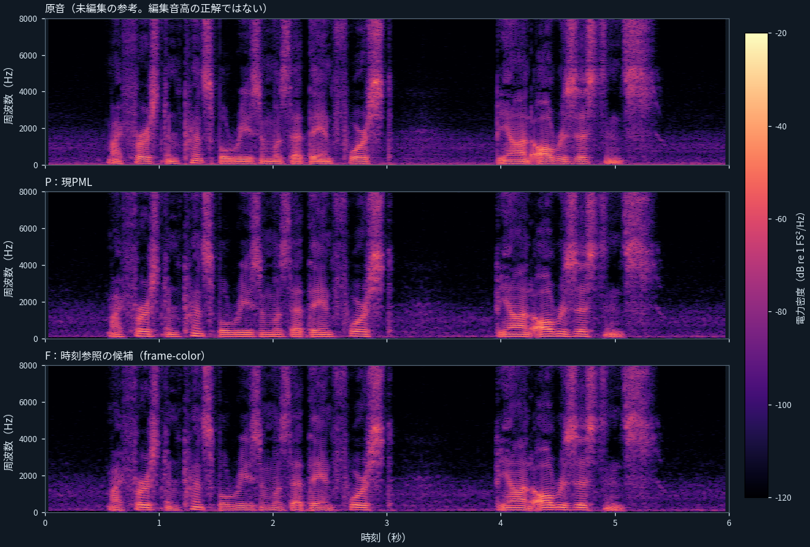
原音/P/Fの全長波形を共通の時刻軸と色範囲で表示。試聴WAVは先頭最大5秒。音量正規化なし。 保存された波形差・SPEC露出を見る
F−P RMS / FS 0.000982201
(F−P RMS) / (P RMS) 0.0331233
F−P 最大絶対差 / FS 0.0282255
注入重み付き log-SPEC差 RMS / neper 0.201355
log-SPEC差 最大絶対値 / neper 2.5915 注入は重なる出力位置でも別に数えます。潜在支持域はkernel窓の和集合であり、実際の効果時間ではありません。nullを0に補完していません。
+3半音 · seed 20261015
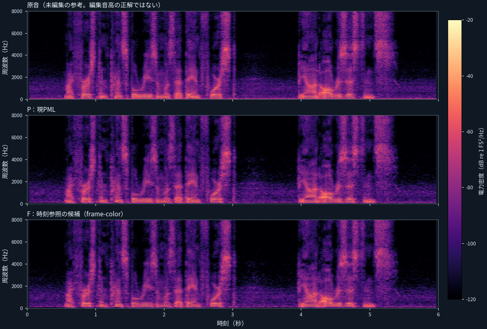
原音/P/Fの全長波形を共通の時刻軸と色範囲で表示。試聴WAVは先頭最大5秒。音量正規化なし。 保存された波形差・SPEC露出を見る
F−P RMS / FS 0.00126398
(F−P RMS) / (P RMS) 0.0421548
F−P 最大絶対差 / FS 0.0394862
注入重み付き log-SPEC差 RMS / neper 0.201355
log-SPEC差 最大絶対値 / neper 2.5915 注入は重なる出力位置でも別に数えます。潜在支持域はkernel窓の和集合であり、実際の効果時間ではありません。nullを0に補完していません。
SAMPLE 3 · 4.045 s
121-121726-0012 native / 0半音 / seed 0
原音/P/Fの全長波形を共通の時刻軸と色範囲で表示。試聴WAVは先頭最大5秒。音量正規化なし。 全長の波形を同じ振幅軸で見る 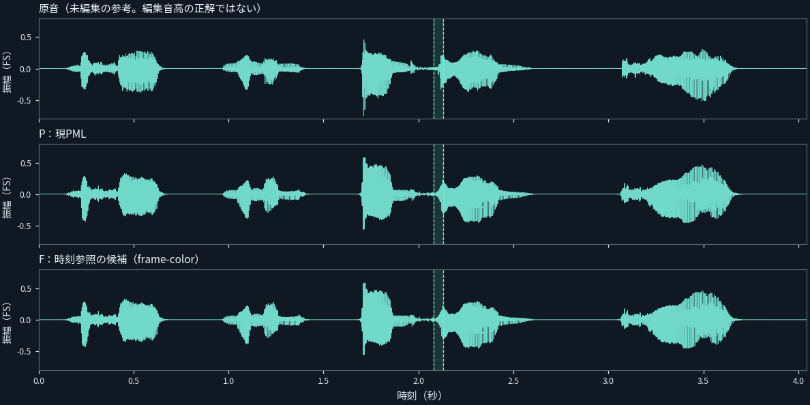
sample3：2.0–2.2秒を拡大（目印2.08–2.13秒） 原音はnative。編集後の正解ではありません。網掛けは既存の参考枠で、音素境界の正解ではありません。
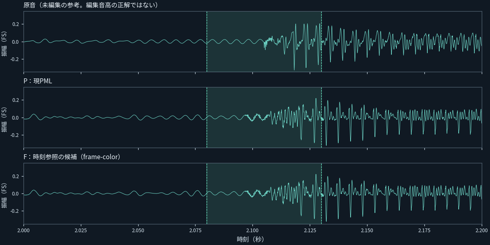
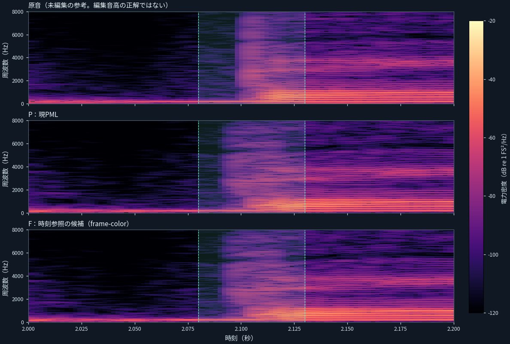
拡大図：20 ms Hann / 2 ms hop / FFT512。中心時刻の前後10 msが窓の支持。全長図とは時間・周波数分解能が異なります。 保存された波形差・SPEC露出を見る
F−P RMS / FS 0.00124607
(F−P RMS) / (P RMS) 0.0200633
F−P 最大絶対差 / FS 0.045227
注入重み付き log-SPEC差 RMS / neper 0.234075
log-SPEC差 最大絶対値 / neper 3.32823 注入は重なる出力位置でも別に数えます。潜在支持域はkernel窓の和集合であり、実際の効果時間ではありません。nullを0に補完していません。
既存比較対象：HNM（旧保存音声・nativeのみ） 旧レポートに掲載済みのHNM音声をSHA・長さ照合後にそのまま再利用。今回の再生成・再測定ではなく、編集音高の正解ではありません。
sample3の保存済み局在観察（事後的な記述） 既に特定されていた参考枠2.08–2.13秒を観察。値は親側の保存集計を転記し、この表示処理では再計測していません。差が大きいことは改善を意味しません。
+3では全長最大差が両seedともこの参考枠内。ただし、P/Fは既存PMLの音高依存mask規則を共有しており、介入対象は音高条件によって異なります。この規則自体をFの新たな効果とは数えません。
他の音高・seedを見る（5対応）
+0半音 · seed 20261015
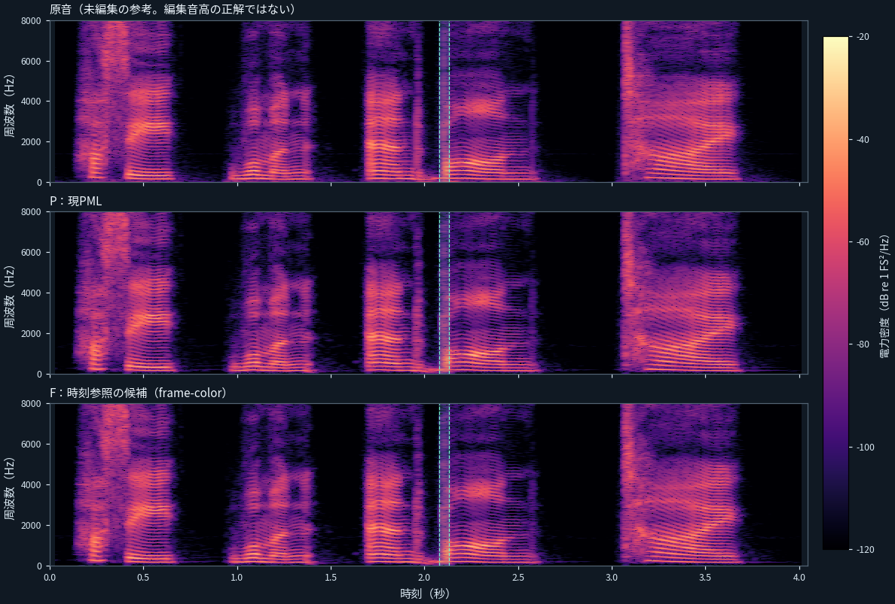
原音/P/Fの全長波形を共通の時刻軸と色範囲で表示。試聴WAVは先頭最大5秒。音量正規化なし。 sample3：2.0–2.2秒を拡大（目印2.08–2.13秒） 原音はnative。編集後の正解ではありません。網掛けは既存の参考枠で、音素境界の正解ではありません。
拡大図：20 ms Hann / 2 ms hop / FFT512。中心時刻の前後10 msが窓の支持。全長図とは時間・周波数分解能が異なります。 保存された波形差・SPEC露出を見る
F−P RMS / FS 0.00101097
(F−P RMS) / (P RMS) 0.0162898
F−P 最大絶対差 / FS 0.038632
注入重み付き log-SPEC差 RMS / neper 0.234075
log-SPEC差 最大絶対値 / neper 3.32823 注入は重なる出力位置でも別に数えます。潜在支持域はkernel窓の和集合であり、実際の効果時間ではありません。nullを0に補完していません。
-3半音 · seed 0
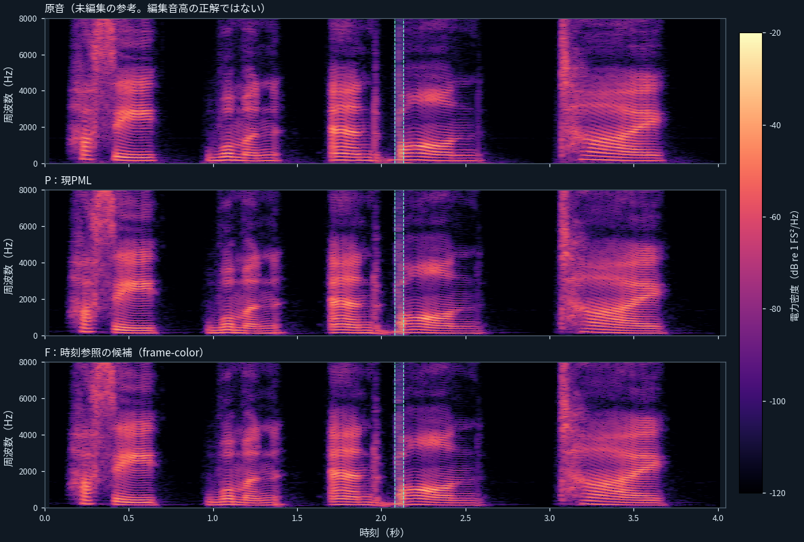
原音/P/Fの全長波形を共通の時刻軸と色範囲で表示。試聴WAVは先頭最大5秒。音量正規化なし。 sample3：2.0–2.2秒を拡大（目印2.08–2.13秒） 原音はnative。編集後の正解ではありません。網掛けは既存の参考枠で、音素境界の正解ではありません。
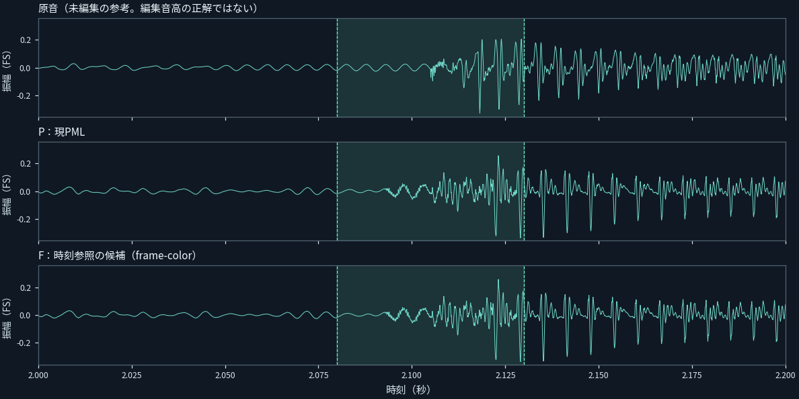
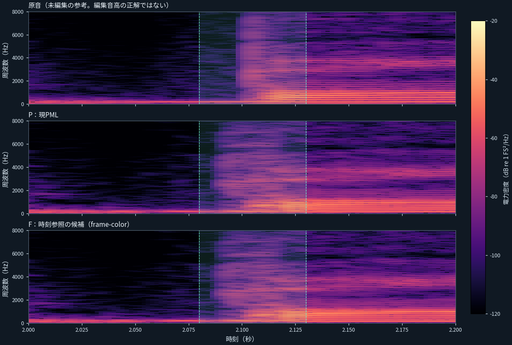
拡大図：20 ms Hann / 2 ms hop / FFT512。中心時刻の前後10 msが窓の支持。全長図とは時間・周波数分解能が異なります。 保存された波形差・SPEC露出を見る
F−P RMS / FS 0.00103248
(F−P RMS) / (P RMS) 0.0174818
F−P 最大絶対差 / FS 0.0323244
注入重み付き log-SPEC差 RMS / neper 0.220554
log-SPEC差 最大絶対値 / neper 3.29646 注入は重なる出力位置でも別に数えます。潜在支持域はkernel窓の和集合であり、実際の効果時間ではありません。nullを0に補完していません。
-3半音 · seed 20261015
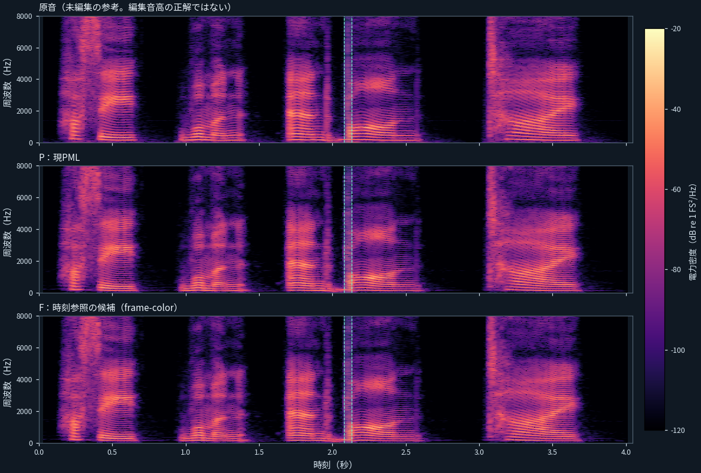
原音/P/Fの全長波形を共通の時刻軸と色範囲で表示。試聴WAVは先頭最大5秒。音量正規化なし。 sample3：2.0–2.2秒を拡大（目印2.08–2.13秒） 原音はnative。編集後の正解ではありません。網掛けは既存の参考枠で、音素境界の正解ではありません。
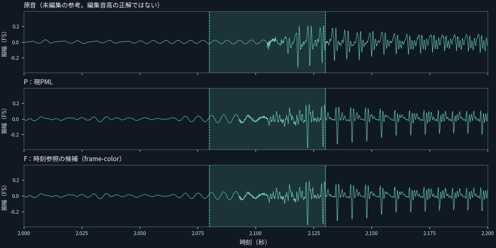
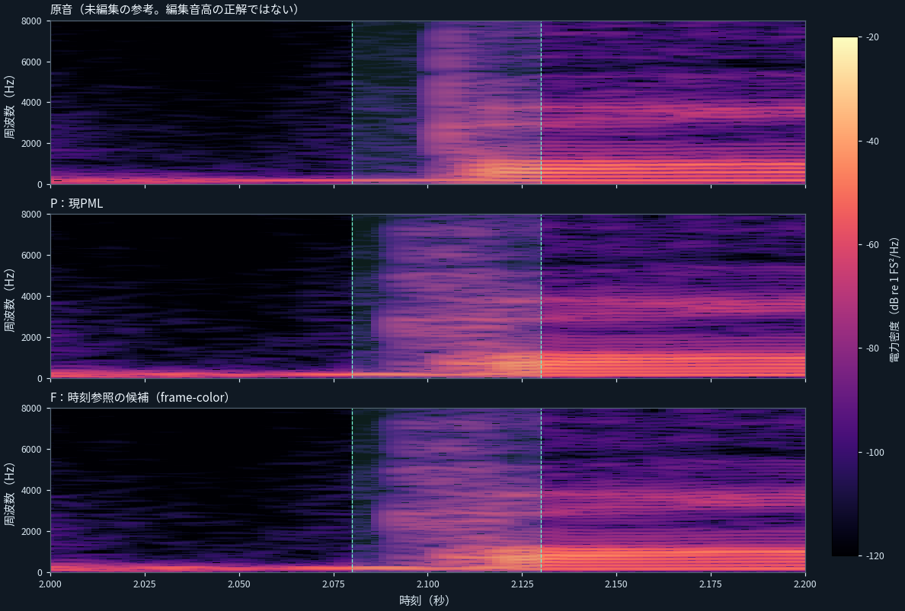
拡大図：20 ms Hann / 2 ms hop / FFT512。中心時刻の前後10 msが窓の支持。全長図とは時間・周波数分解能が異なります。 保存された波形差・SPEC露出を見る
F−P RMS / FS 0.000428881
(F−P RMS) / (P RMS) 0.00727298
F−P 最大絶対差 / FS 0.0184207
注入重み付き log-SPEC差 RMS / neper 0.220554
log-SPEC差 最大絶対値 / neper 3.29646 注入は重なる出力位置でも別に数えます。潜在支持域はkernel窓の和集合であり、実際の効果時間ではありません。nullを0に補完していません。
+3半音 · seed 0
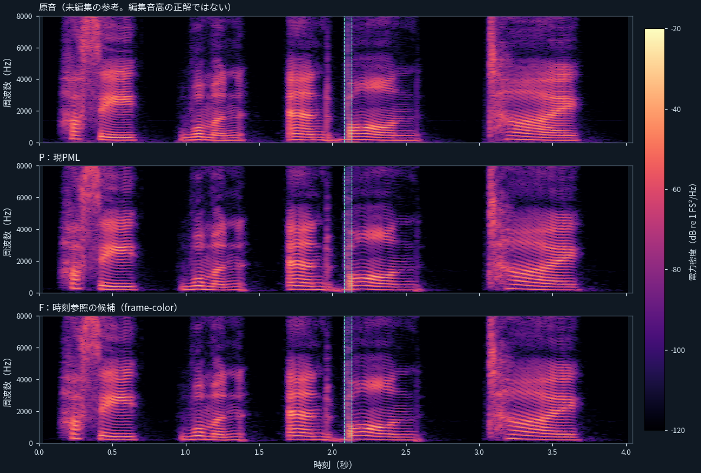
原音/P/Fの全長波形を共通の時刻軸と色範囲で表示。試聴WAVは先頭最大5秒。音量正規化なし。 sample3：2.0–2.2秒を拡大（目印2.08–2.13秒） 原音はnative。編集後の正解ではありません。網掛けは既存の参考枠で、音素境界の正解ではありません。
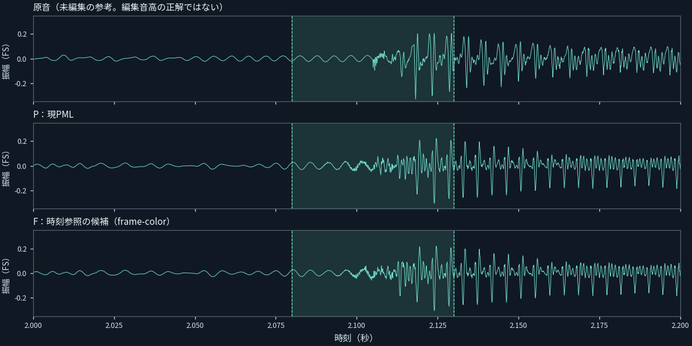
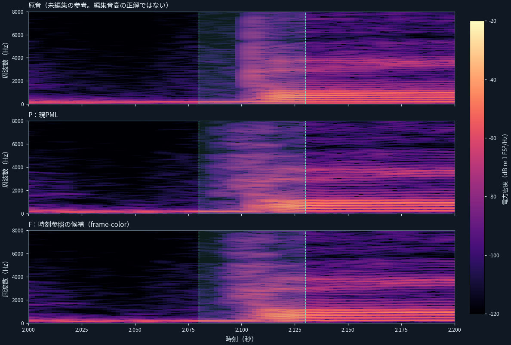
拡大図：20 ms Hann / 2 ms hop / FFT512。中心時刻の前後10 msが窓の支持。全長図とは時間・周波数分解能が異なります。 保存された波形差・SPEC露出を見る
F−P RMS / FS 0.00206404
(F−P RMS) / (P RMS) 0.0357329
F−P 最大絶対差 / FS 0.111181
注入重み付き log-SPEC差 RMS / neper 0.299913
log-SPEC差 最大絶対値 / neper 3.32823 注入は重なる出力位置でも別に数えます。潜在支持域はkernel窓の和集合であり、実際の効果時間ではありません。nullを0に補完していません。
+3半音 · seed 20261015
原音/P/Fの全長波形を共通の時刻軸と色範囲で表示。試聴WAVは先頭最大5秒。音量正規化なし。 sample3：2.0–2.2秒を拡大（目印2.08–2.13秒） 原音はnative。編集後の正解ではありません。網掛けは既存の参考枠で、音素境界の正解ではありません。
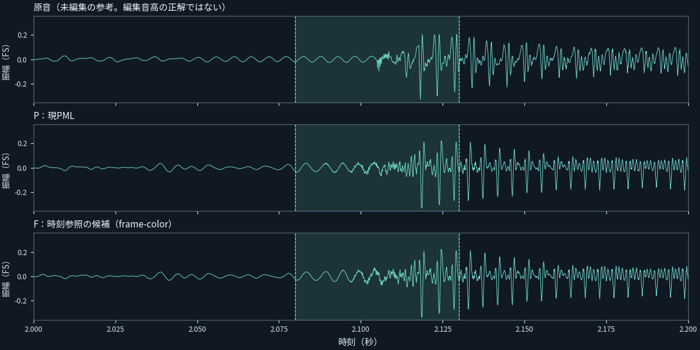
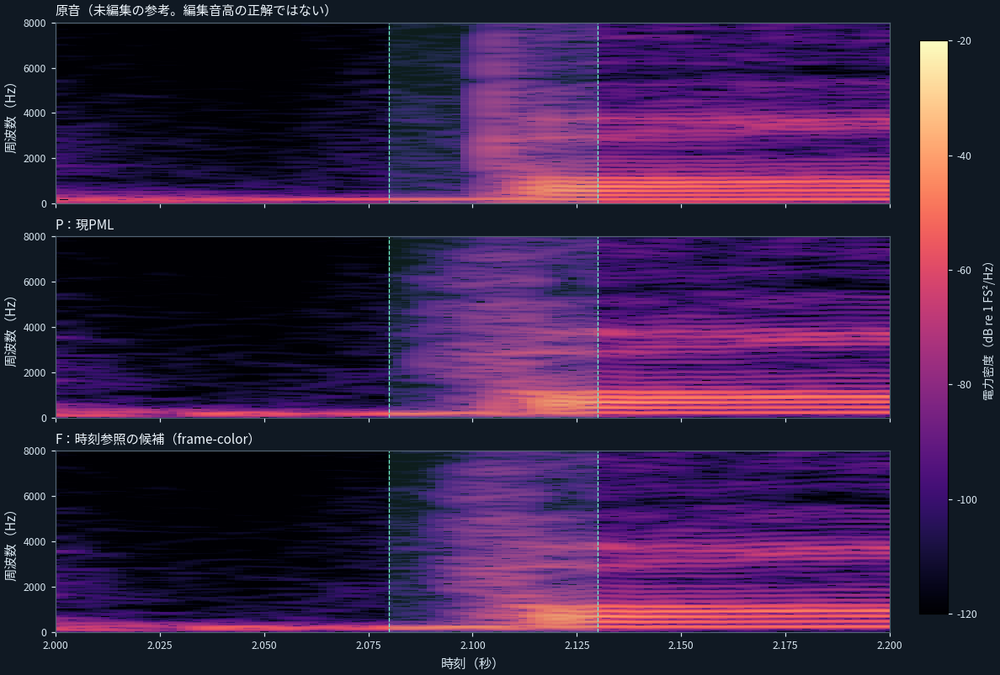
拡大図：20 ms Hann / 2 ms hop / FFT512。中心時刻の前後10 msが窓の支持。全長図とは時間・周波数分解能が異なります。 保存された波形差・SPEC露出を見る
F−P RMS / FS 0.00208203
(F−P RMS) / (P RMS) 0.0360653
F−P 最大絶対差 / FS 0.0613328
注入重み付き log-SPEC差 RMS / neper 0.299913
log-SPEC差 最大絶対値 / neper 3.32823 注入は重なる出力位置でも別に数えます。潜在支持域はkernel窓の和集合であり、実際の効果時間ではありません。nullを0に補完していません。
SAMPLE 4 · 6.000 s
1221-135766-0005 native / 0半音 / seed 0
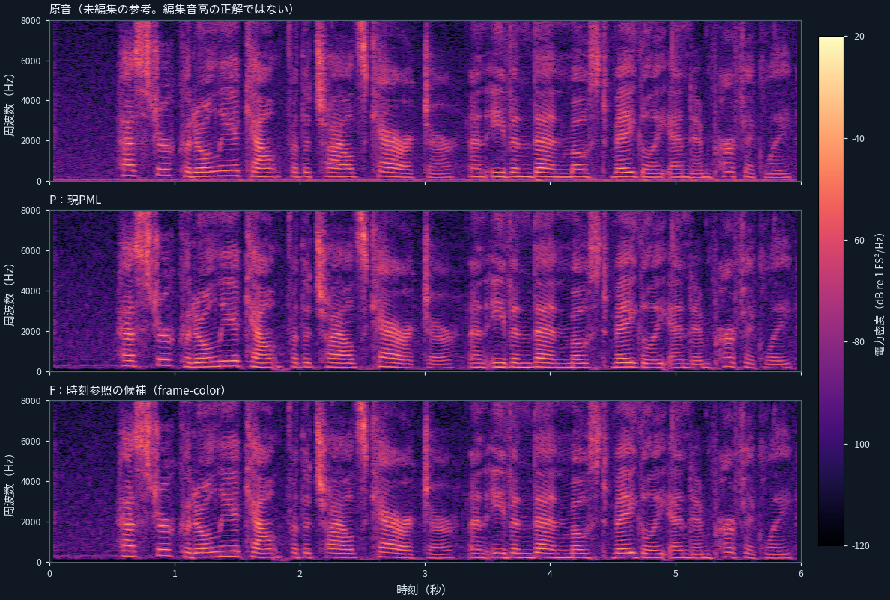
原音/P/Fの全長波形を共通の時刻軸と色範囲で表示。試聴WAVは先頭最大5秒。音量正規化なし。 全長の波形を同じ振幅軸で見る 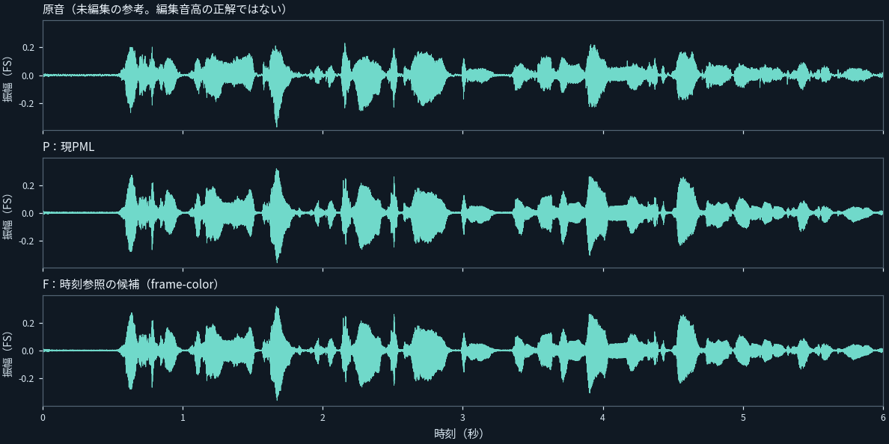
保存された波形差・SPEC露出を見る
F−P RMS / FS 0.00233108
(F−P RMS) / (P RMS) 0.0600736
F−P 最大絶対差 / FS 0.100122
注入重み付き log-SPEC差 RMS / neper 0.283189
log-SPEC差 最大絶対値 / neper 2.69945 注入は重なる出力位置でも別に数えます。潜在支持域はkernel窓の和集合であり、実際の効果時間ではありません。nullを0に補完していません。
既存比較対象：HNM（旧保存音声・nativeのみ） 旧レポートに掲載済みのHNM音声をSHA・長さ照合後にそのまま再利用。今回の再生成・再測定ではなく、編集音高の正解ではありません。
他の音高・seedを見る（5対応）
+0半音 · seed 20261015
原音/P/Fの全長波形を共通の時刻軸と色範囲で表示。試聴WAVは先頭最大5秒。音量正規化なし。 保存された波形差・SPEC露出を見る
F−P RMS / FS 0.0025819
(F−P RMS) / (P RMS) 0.0671447
F−P 最大絶対差 / FS 0.0999491
注入重み付き log-SPEC差 RMS / neper 0.283189
log-SPEC差 最大絶対値 / neper 2.69945 注入は重なる出力位置でも別に数えます。潜在支持域はkernel窓の和集合であり、実際の効果時間ではありません。nullを0に補完していません。
-3半音 · seed 0
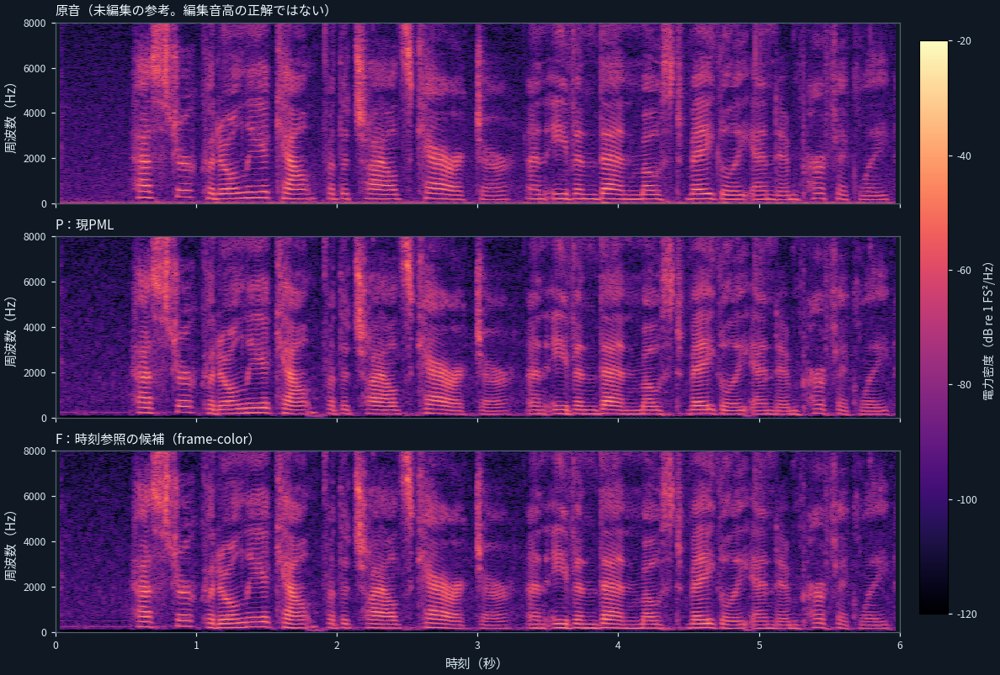
原音/P/Fの全長波形を共通の時刻軸と色範囲で表示。試聴WAVは先頭最大5秒。音量正規化なし。 保存された波形差・SPEC露出を見る
F−P RMS / FS 0.0025737
(F−P RMS) / (P RMS) 0.0702205
F−P 最大絶対差 / FS 0.186172
注入重み付き log-SPEC差 RMS / neper 0.280818
log-SPEC差 最大絶対値 / neper 2.53778 注入は重なる出力位置でも別に数えます。潜在支持域はkernel窓の和集合であり、実際の効果時間ではありません。nullを0に補完していません。
-3半音 · seed 20261015
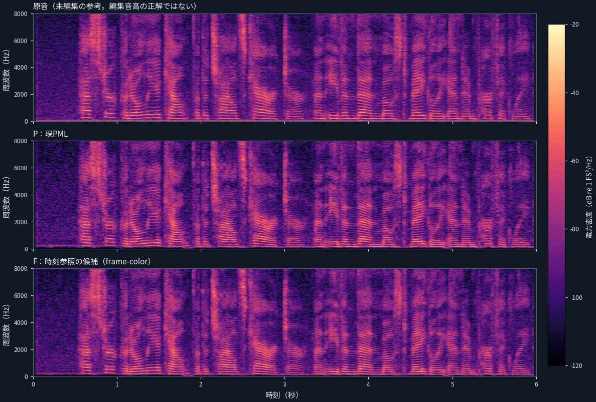
原音/P/Fの全長波形を共通の時刻軸と色範囲で表示。試聴WAVは先頭最大5秒。音量正規化なし。 保存された波形差・SPEC露出を見る
F−P RMS / FS 0.00176555
(F−P RMS) / (P RMS) 0.048455
F−P 最大絶対差 / FS 0.0703647
注入重み付き log-SPEC差 RMS / neper 0.280818
log-SPEC差 最大絶対値 / neper 2.53778 注入は重なる出力位置でも別に数えます。潜在支持域はkernel窓の和集合であり、実際の効果時間ではありません。nullを0に補完していません。
+3半音 · seed 0
原音/P/Fの全長波形を共通の時刻軸と色範囲で表示。試聴WAVは先頭最大5秒。音量正規化なし。 保存された波形差・SPEC露出を見る
F−P RMS / FS 0.00275156
(F−P RMS) / (P RMS) 0.0785244
F−P 最大絶対差 / FS 0.121328
注入重み付き log-SPEC差 RMS / neper 0.277318
log-SPEC差 最大絶対値 / neper 4.22458 注入は重なる出力位置でも別に数えます。潜在支持域はkernel窓の和集合であり、実際の効果時間ではありません。nullを0に補完していません。
+3半音 · seed 20261015
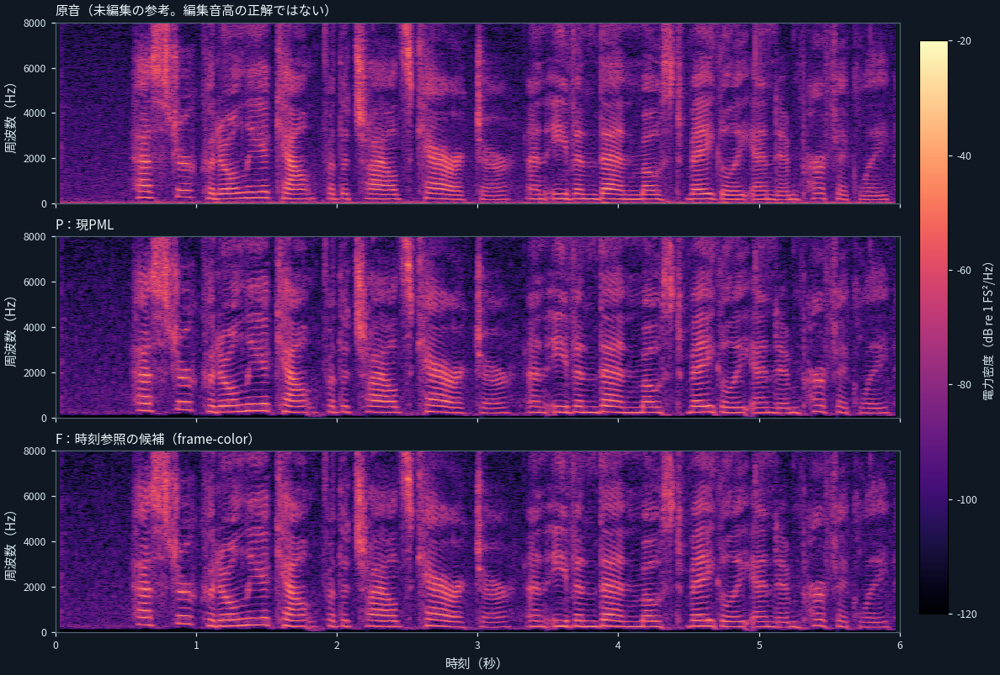
原音/P/Fの全長波形を共通の時刻軸と色範囲で表示。試聴WAVは先頭最大5秒。音量正規化なし。 保存された波形差・SPEC露出を見る
F−P RMS / FS 0.0026509
(F−P RMS) / (P RMS) 0.0760875
F−P 最大絶対差 / FS 0.118014
注入重み付き log-SPEC差 RMS / neper 0.277318
log-SPEC差 最大絶対値 / neper 4.22458 注入は重なる出力位置でも別に数えます。潜在支持域はkernel窓の和集合であり、実際の効果時間ではありません。nullを0に補完していません。
SAMPLE 5 · 4.090 s
1089-134686-0032 native / 0半音 / seed 0
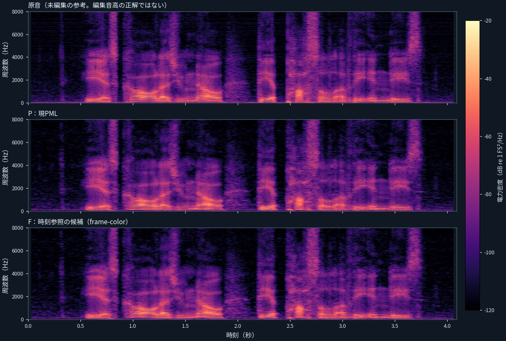
原音/P/Fの全長波形を共通の時刻軸と色範囲で表示。試聴WAVは先頭最大5秒。音量正規化なし。 全長の波形を同じ振幅軸で見る 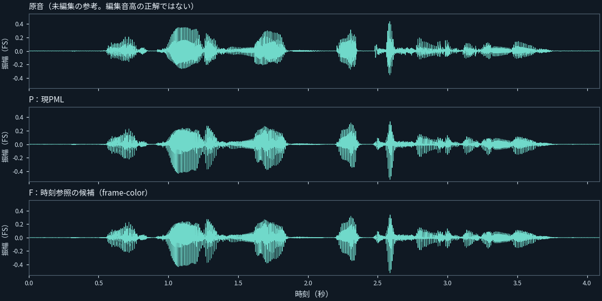
保存された波形差・SPEC露出を見る
F−P RMS / FS 0.000405345
(F−P RMS) / (P RMS) 0.00817446
F−P 最大絶対差 / FS 0.0127834
注入重み付き log-SPEC差 RMS / neper 0.249839
log-SPEC差 最大絶対値 / neper 3.13706 注入は重なる出力位置でも別に数えます。潜在支持域はkernel窓の和集合であり、実際の効果時間ではありません。nullを0に補完していません。
既存比較対象：HNM（旧保存音声・nativeのみ） 旧レポートに掲載済みのHNM音声をSHA・長さ照合後にそのまま再利用。今回の再生成・再測定ではなく、編集音高の正解ではありません。
他の音高・seedを見る（5対応）
+0半音 · seed 20261015
原音/P/Fの全長波形を共通の時刻軸と色範囲で表示。試聴WAVは先頭最大5秒。音量正規化なし。 保存された波形差・SPEC露出を見る
F−P RMS / FS 0.000367942
(F−P RMS) / (P RMS) 0.0074243
F−P 最大絶対差 / FS 0.0166863
注入重み付き log-SPEC差 RMS / neper 0.249839
log-SPEC差 最大絶対値 / neper 3.13706 注入は重なる出力位置でも別に数えます。潜在支持域はkernel窓の和集合であり、実際の効果時間ではありません。nullを0に補完していません。
-3半音 · seed 0
原音/P/Fの全長波形を共通の時刻軸と色範囲で表示。試聴WAVは先頭最大5秒。音量正規化なし。 保存された波形差・SPEC露出を見る
F−P RMS / FS 0.000248041
(F−P RMS) / (P RMS) 0.00519763
F−P 最大絶対差 / FS 0.0104665
注入重み付き log-SPEC差 RMS / neper 0.281779
log-SPEC差 最大絶対値 / neper 3.13706 注入は重なる出力位置でも別に数えます。潜在支持域はkernel窓の和集合であり、実際の効果時間ではありません。nullを0に補完していません。
-3半音 · seed 20261015
原音/P/Fの全長波形を共通の時刻軸と色範囲で表示。試聴WAVは先頭最大5秒。音量正規化なし。 保存された波形差・SPEC露出を見る
F−P RMS / FS 0.000240102
(F−P RMS) / (P RMS) 0.00503495
F−P 最大絶対差 / FS 0.00977175
注入重み付き log-SPEC差 RMS / neper 0.281779
log-SPEC差 最大絶対値 / neper 3.13706 注入は重なる出力位置でも別に数えます。潜在支持域はkernel窓の和集合であり、実際の効果時間ではありません。nullを0に補完していません。
+3半音 · seed 0
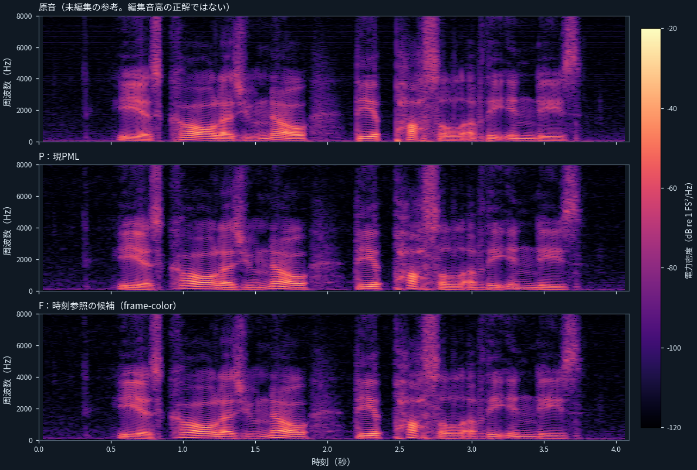
原音/P/Fの全長波形を共通の時刻軸と色範囲で表示。試聴WAVは先頭最大5秒。音量正規化なし。 保存された波形差・SPEC露出を見る
F−P RMS / FS 0.000506813
(F−P RMS) / (P RMS) 0.0110387
F−P 最大絶対差 / FS 0.0226592
注入重み付き log-SPEC差 RMS / neper 0.227753
log-SPEC差 最大絶対値 / neper 3.13706 注入は重なる出力位置でも別に数えます。潜在支持域はkernel窓の和集合であり、実際の効果時間ではありません。nullを0に補完していません。
+3半音 · seed 20261015
原音/P/Fの全長波形を共通の時刻軸と色範囲で表示。試聴WAVは先頭最大5秒。音量正規化なし。 保存された波形差・SPEC露出を見る
F−P RMS / FS 0.000476582
(F−P RMS) / (P RMS) 0.0103754
F−P 最大絶対差 / FS 0.0142039
注入重み付き log-SPEC差 RMS / neper 0.227753
log-SPEC差 最大絶対値 / neper 3.13706 注入は重なる出力位置でも別に数えます。潜在支持域はkernel窓の和集合であり、実際の効果時間ではありません。nullを0に補完していません。
音声・表示・記録の読み方 計測・図は元の全長float64 NPYです。試聴WAVは先頭最大5秒をPCM16へround(x×32768)で変換しました。正規化、gain、clip、dither、resample、時間整列を加えていません。原音・HNMのPCM16は同じ先頭最大5秒をsample値を変えずに使用し、5秒以内ならWAVをbyte単位で再利用しています。 全長の通常表示は1024点（64 ms）periodic Hann、128点（8 ms）hopの片側PSD。melはHTK尺度の全長図では80三角filter、拡大図では40三角filterで重み平均したPSDです。拡大図は20 ms Hann・2 ms hop・FFT512で、中心時刻の前後10 msを使います。全長図とは時間・周波数分解能が異なります。いずれも原音/P/F・全条件共通の −120～−20 dB re 1 FS²/Hz。色範囲外の値は表示端色になりますが、音声は変更しません。 スペクトログラムは保存float64波形の表示変換です。新たな品質測定や合否判定ではありません。音声を聴くときの端末・ブラウザ側の音量設定は別です。 5つの録音に音高・seed違いがあります。30対応を30独立録音とは数えません。主表示は全5録音のnative・seed 0、残りは各録音の詳細にあります。 source NPYファイル、source PCM、配布PCM16、配布WAVのSHA-256、最大量子化差をaudio-manifest.jsonへ記録しています。WAVがブラウザで再生できない場合は保存して対応プレーヤーで開いてください。 生成側の終了状態: generated_observed_not_quality_evaluated_not_adopted
音声の出典と改変 LibriSpeech test-clean / OpenSLR 12。Vassil Panayotov（Daniel Povey協力）、LibriVox由来。配布元 、CC BY 4.0 。元の計測は各録音の先頭最大6秒の抜粋です。このページの試聴音声は全方式共通の先頭最大5秒。原音・HNMは既存掲載PCM16のsample値を維持してcropしました。P/Fは16 kHz、0/±3半音、seed 0/20261015の保存合成音で、PCM16 WAVへ無正規化・無clip変換しました。著者が今回の改変を推奨しているという意味ではありません。
解釈のための調査記録 以下は次の解釈に使う文献・式の整理で、今回の品質結果ではありません。時間変動filterと分割処理は一般に同値ではありませんが、特定条件では一致し得ます。
以前の低域参照固定対照：120録音720条件、品質未評価 （2026-10-18の保存研究。試聴は5録音30音声。今回のP/F測定とは別資料です。）
保存結果の比較資料。品質評価・採用判断は別の固定手順で行います。